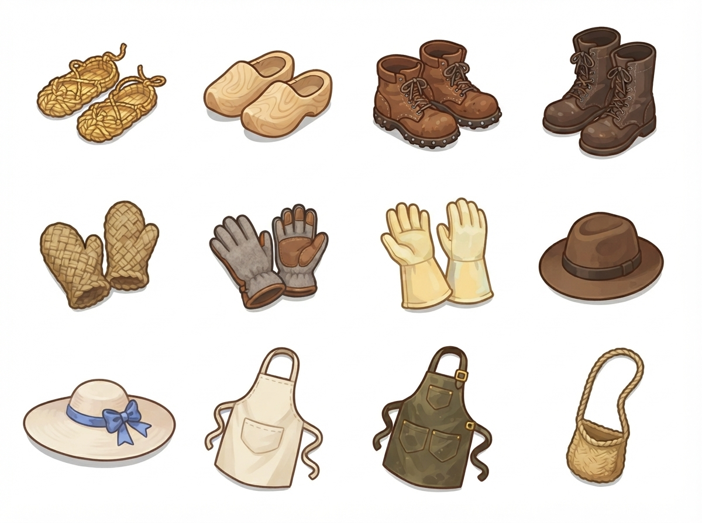
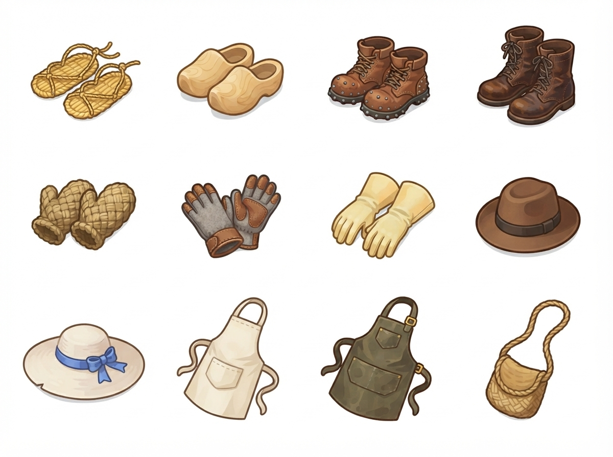
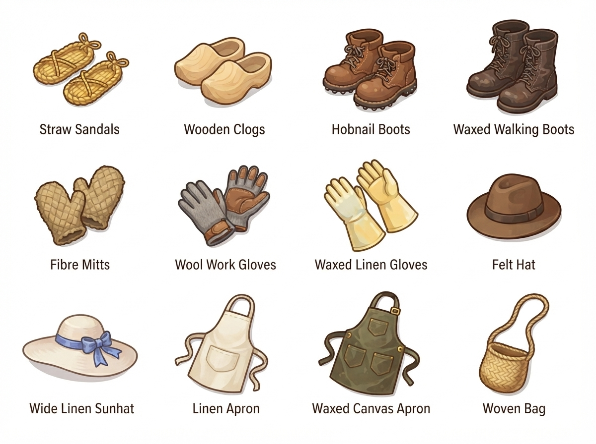

Green frame = the pick used in the game. To swap: python3 .claude/skills/openart-pictures/fetch.py pick sheet66-wearables <version>, then import again.



A sprite sheet of exactly 12 separate objects in 3 rows of 4: things a farmer wears, as item icons, in exactly the art style of reference image 1 (use it only for the style): bright, friendly mobile-game cartoon, thick rounded dark outlines, flat colours with simple cel shading, chunky cute proportions, three-quarter top-down view (isometric, like Hay Day), small soft shadow under each. Plain pure white background, evenly spaced with wide white space between them, none touching, each one solid piece with no loose crumbs, sparks, sparkles or motion lines beside it. No text, no letters, no numbers, no captions under the objects, nothing under the objects but white, no frames, no grid lines, no people, no hands, no feet, no faces on any object. Every item is seen on its own, like a shop item, from the same angle at about the same size; where there are two of a pair they stand close together and touch, so that they read as one object. Row 1: (1) straw sandals: a pair of simple sandals woven from golden straw with string ties; (2) wooden clogs: a pair of carved light-wood clogs; (3) hobnail boots: a pair of brown leather work boots with laces and studded soles; (4) waxed walking boots: a pair of tall dark-brown waxed leather boots with laces. Row 2: (5) fibre mitts: a pair of rough tan mittens woven from plant fibre; (6) wool work gloves: a pair of grey wool gloves with brown leather palms; (7) waxed linen gloves: a pair of cream-yellow waxed linen gloves with long cuffs; (8) felt hat: a round brown felt hat with a short brim and a plain band. Row 3: (9) wide linen sunhat: a very wide-brimmed pale linen sunhat with a blue ribbon; (10) linen apron: a cream linen apron with a front pocket, a neck loop and waist ties, laid out flat; (11) waxed canvas apron: a dark olive waxed canvas apron with two pockets and a brass buckle, laid out flat; (12) woven bag: a small tan shoulder bag woven from plant fibre with a rope strap.